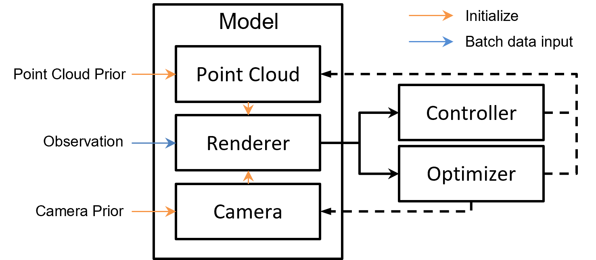

Model#
As depicted in the diagram below, the components related to model training consist of BaseModel, Controller, and Optimizer.
BaseModel: Provides a convenient and flexible way to organize the training process, manage parameters, define computations, and leverage PyTorch’s automatic differentiation capabilities. It is associated with a Point Cloud Model, Camera Model, and Renderer, which are the primary targets for optimization.
Optimizer: Responsible for automatically updating the model parameters, supporting multiple optimizers.
Controller: Responsible for automatically updating the structure of the point cloud model.
The interaction between the model and optimizer during training in Pointrix is illustrated below:

The data passed to the model includes Point Cloud Priors, Observations, and Camera Priors, all provided by the data pipeline on the left.
Model#
The model consists of three main components:
Point Cloud Model: An optimizable point cloud model where users can extend its features by registering optimizable attributes. For example:
point_cloud = PointsCloud(cfg) point_cloud.register_attribute('position', position) point_cloud.register_attribute('rgb', rgb)
With the above code, users register ‘position’ and ‘rgb’ attributes for each point in the point cloud. Users can extend the point cloud’s features by defining custom attributes. For instance, Gaussian point clouds may include attributes such as ‘sh’, ‘scale’, ‘rotation’, ‘opacity’, and ‘position’.
Camera Model: Mainly includes three optimizable attributes:
qrots,tvecs, andintrs, representing rotation, translation, and camera intrinsic parameters. Support for extending custom attributes will be added in the future.Renderer: Includes support for various rendering methods such as the original Gaussian kernel, Gsplat, and Msplat. Typically, as shown in the figure, the renderer reads the camera and point cloud data for the corresponding viewpoints from the model and outputs the rendered results.
Optimizer and Controller#
The optimizer is responsible for updating the model parameters, while the controller is responsible for updating the model structure (usually the point cloud model).